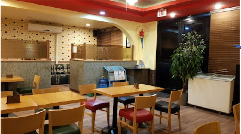

Food is something you always must experience when you travel, so in this article, I would like to give you my top picks on where to dine when you are visiting Saipan.
Zoom Café. | Susupe, Saipan 
Zoom Café serves great fried chicken which is my personal favorite. They also serve a number of drinks and other types of deserts. They also have karaoke rooms that you and your friends could enjoy.